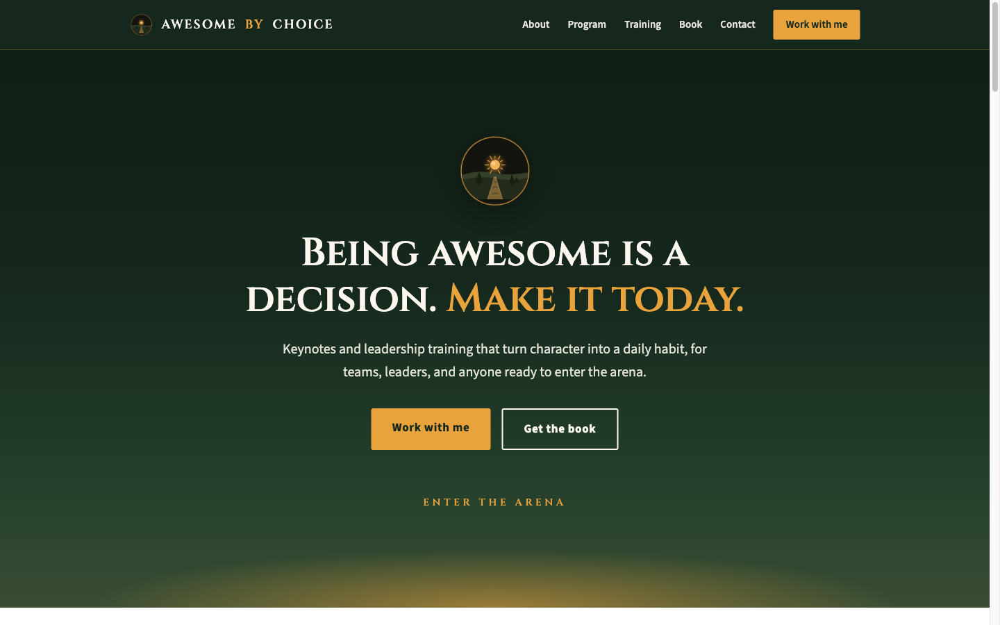
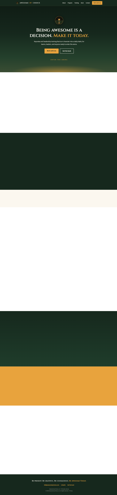

2026 · Shipped · Client work
Awesome by Choice
Leadership training and keynote speaking. A personal brand site where the speaker is the product, so the design had to feel like a room you'd want to be in rather than a consultancy brochure.

Warm authority
The category default is a smiling headshot on white with a blue button. This goes the other way: deep forest green, an amber that behaves like lamplight, and a serif with real contrast between thick and thin strokes.
- Small caps in the headline. The display serif runs in caps-and-small-caps, which reads as inscription rather than marketing.
- Amber only on the promise and the action. "Make it today" and the primary button — the same colour tying the claim to the click.
- A drawn emblem, not a photo. A sunrise over a path in a circle. It works at favicon size and it doesn't age like a headshot.
- Green that shifts down the page. The background warms toward the horizon rather than sitting flat.
Palette
#16281D forest
#E8A33D amber
#FBF7EF cream
#E5DECF linen

Client work. Screenshots and write-up only — the site's content, branding and photography belong to the client and are not republished here.